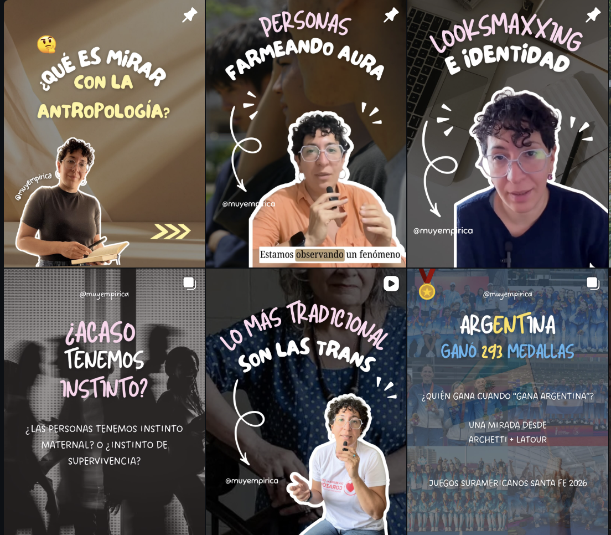
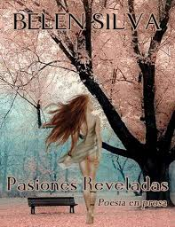
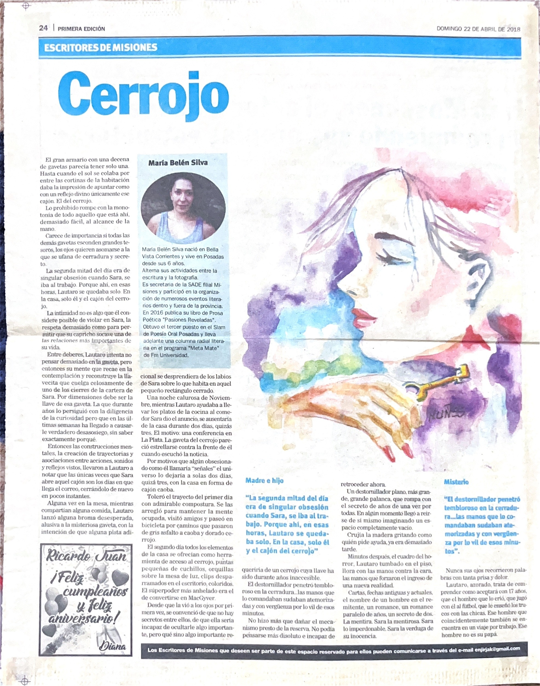
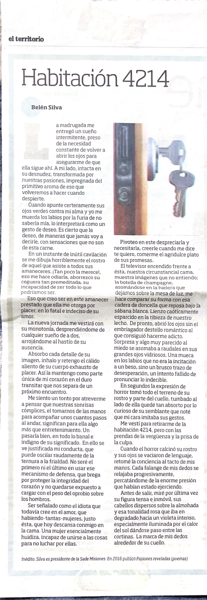
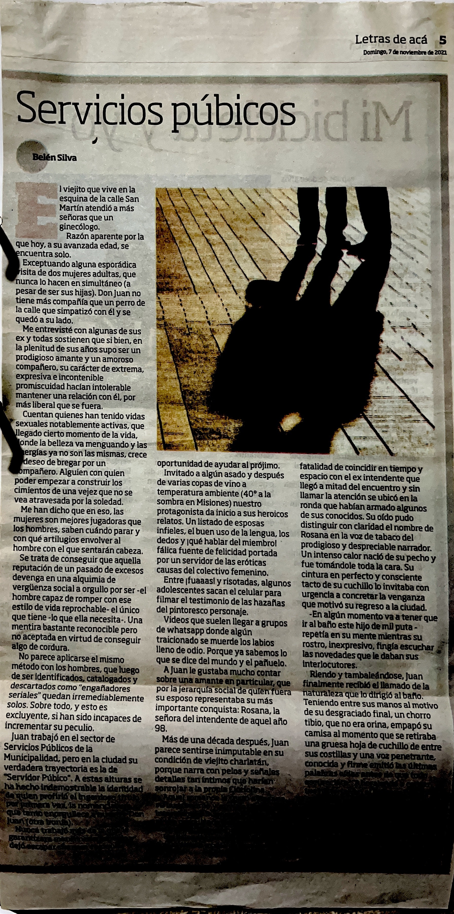
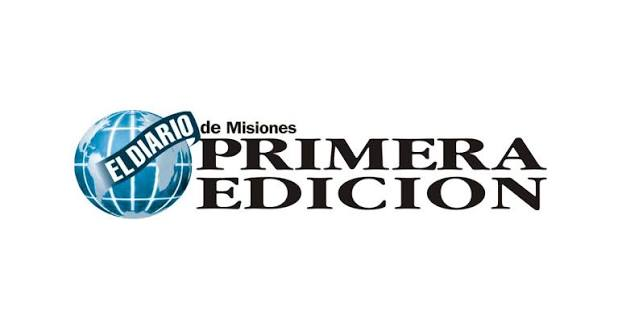
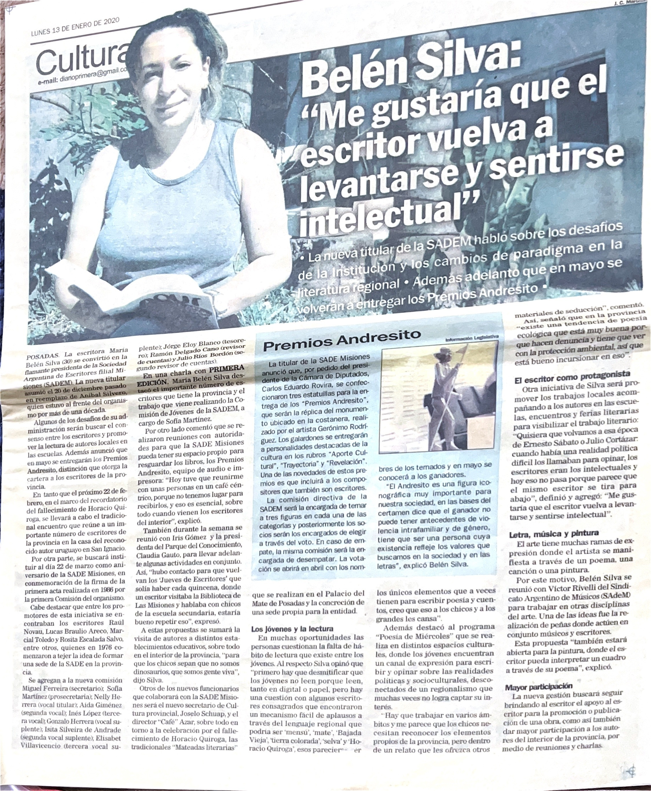
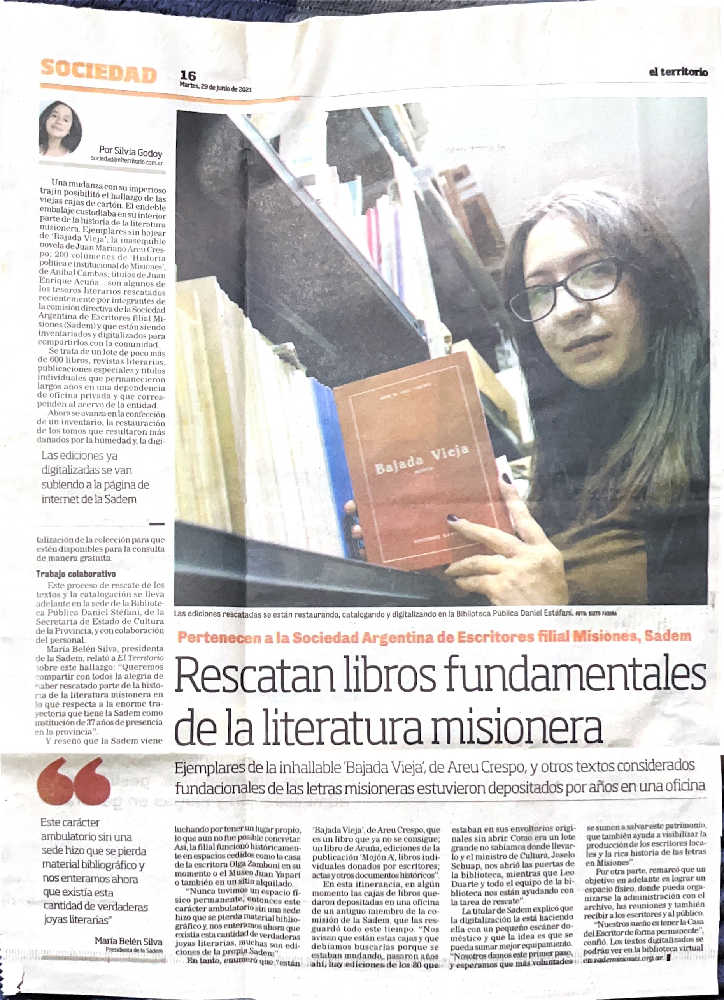
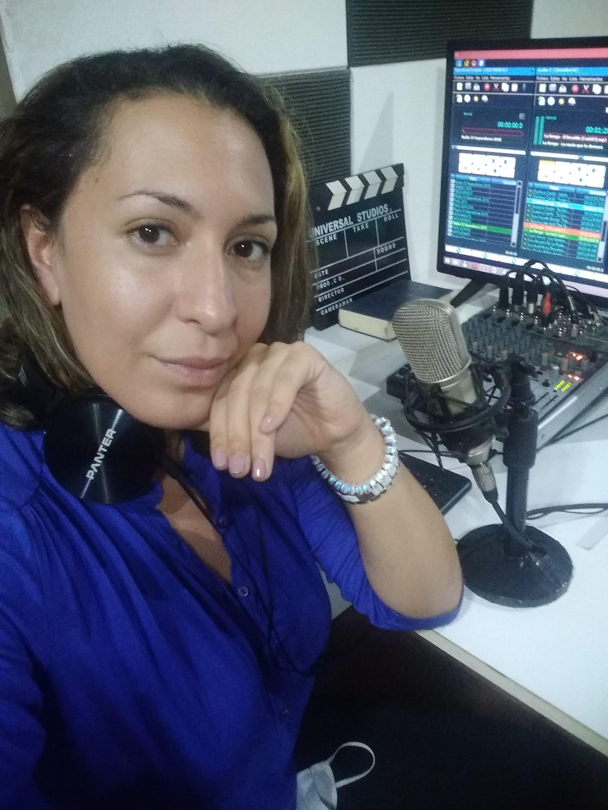
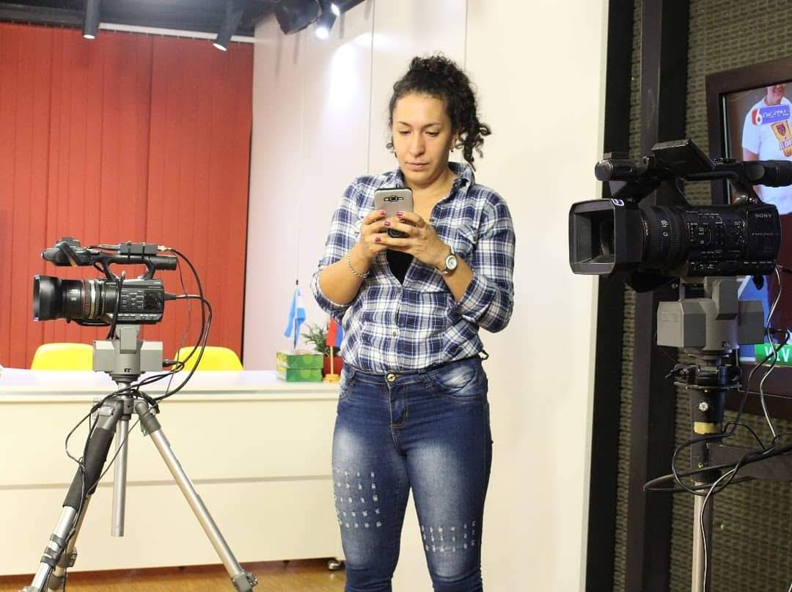

Comunicación con mirada antropológica
Creo contenidos en MuyEmpírica y escribo en Substack. También participo en entrevistas y conversaciones en medios y podcasts.
Soy María Belén Silva.
Periodista, antropóloga social y creadora en MuyEmpírica
Comunico la actualidad con una mirada antropológica. Mi recorrido reúne periodismo, literatura y gestión cultural: distintas formas de acercarme a las historias de nuestro tiempo.
En redes y en la escritura, busco poner los acontecimientos en contexto y abrir conversaciones sobre aquello que damos por sentado.
Actualidad, cultura y vida cotidiana desde una perspectiva antropológica. Un espacio de divulgación y conversación con una comunidad en crecimiento.

Textos para detenerse, seguir una pregunta y explorar las conexiones entre la actualidad y la vida social.
De la poesía al periodismo, un recorrido que hoy busca profundizar en la crónica y la escritura de largo aliento.

Mi primer poemario publicado. Una parte de mi recorrido como autora y de mi relación con la escritura.
Una crónica en primera persona de TEDx Río de la Plata en Tecnópolis: las charlas, los encuentros y las preguntas de una jornada dedicada a compartir ideas.
Primera Edición · 27 de septiembre de 2015
Leer la nota original ↗Mis cuentos también fueron publicados en los diarios El Territorio y Primera Edición de Misiones. La escritura literaria es parte de mi recorrido y de mi relación con las historias.

Primera Edición · 22 de abril de 2018

El Territorio

El Territorio

Prensa, radio y televisión: espacios de mi recorrido y de conversación pública.
Mi participación en Telemundo Miami.
Ver la entrevista en YouTube ↗
Creo contenidos en MuyEmpírica y escribo en Substack. También participo en entrevistas y conversaciones en medios y podcasts.

Fui presidenta de SADE, filial Misiones, durante tres mandatos. Una experiencia de participación institucional en el ámbito literario y cultural.
Una nota de Silvia Godoy sobre el trabajo colectivo de recuperación, catalogación y digitalización del acervo de SADE Misiones.

Una entrevista sobre escritura, comunidad y los proyectos de la filial Misiones.
Leer entrevista ↗La continuidad de mi gestión al frente de la institución.
Leer nota ↗

Dos años en un matutino informativo en Radio 33, experiencia en coberturas electorales, un micro cultural televisivo semanal en Canal 6 y una columna literaria en el programa Meta Mate de FM Universidad.
Mi recorrido en la prensa incluye una nota sobre TEDx Río de la Plata en Primera Edición (2015) y cuentos publicados en El Territorio. En 2016 publiqué el poemario Pasiones reveladas.
Mi formación en antropología social se vincula con el estudio de las trayectorias, las relaciones y las condiciones que atraviesan la vida cotidiana.
Investigo las experiencias de jóvenes universitarios de Posadas y sus formas de articular estudio, trabajo y proyectos de futuro, en el marco del proyecto sobre juventudes dirigido por el Dr. Alexis Rasftopolo.
Integro el equipo del proyecto «Indicadores de impacto de un gran evento deportivo. El caso de los Juegos Misioneros», dirigido por Eva Muguerza. Mi aporte se centra en experiencias de participación, trayectorias y vínculos sociales.
Para colaboraciones editoriales, propuestas de escritura, entrevistas y proyectos culturales o de comunicación.
mail@belensilva.com.ar ↗